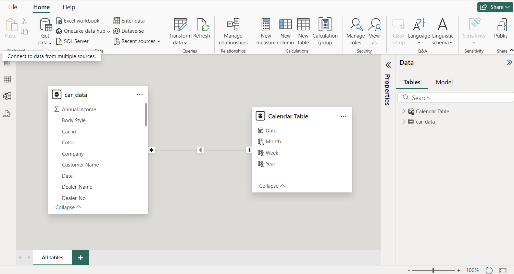

The Car Sales Dashboard is a comprehensive Business Intelligence (BI) project designed to provide detailed insights into car sales data. This project aims to centralize and visualize sales data, allowing for interactive exploration and analysis. The dashboard leverages the capabilities of Power BI to offer real-time insights and detailed breakdowns of sales performance.
Data Sources and Architecture:
- Data Sources: The data is sourced from publicly available datasets, initially downloaded to local storage and later upgraded to Google Sheets for seamless integration using the CSV API.
- Data Processing: Power Query is used to quickly standardize the data, ensuring consistency and accuracy. This involves cleaning, transforming, and loading the data into Power BI.
- Architecture: The architecture includes a data warehouse built using Power BI Desktop, with the dashboard designed in a sleek, black "cool" theme that aligns with the automotive industry's aesthetic.
Key Performance Indicators (KPIs) and Reports:
- KPIs: Year-to-Date (YTD) Total Sales, Month-to-Date (MTD) Total Sales, YTD Average Price, YTD Cars Sold, MTD Average Price, and MTD Cars Sold.
- Reports: The dashboard includes multiple reports, such as weekly sales trends, total sales by body style and color, regional sales distribution, and company-wise sales trends.
Data Visualizations:
Sales Overview:
- YTD Total Sales: $371.2M
- YTD Average Price: $28.0K
- YTD Cars Sold: 13.3K
- Weekly Sales Trend: Line chart displaying weekly sales performance.
- Total Sales by Body Style: Pie chart showing sales distribution across different car body styles.
- Total Sales by Color: Pie chart depicting sales distribution by car color.
- Regional Sales: Map showing YTD cars sold by dealer regions.
- Company-Wise Sales Trend: Bar charts showing sales metrics for different car companies.
Sales Details:
- Detailed table listing individual car sales, including car ID, sale date, customer name, dealer name, car company, color, model, and total sales amount.
Data Model Relationship:
To implement KPI calculations, the data model design involves a one-to-many relationship between the date table and the main table.
Power Query:
Performed data normalization, ensured no error data, no empty data, and handled special character replacement.
User Interaction:
- The dashboard includes filters for body style, dealer name, transmission type, and engine type, allowing users to customize their view and analyze specific segments of data.
- Users can switch between the overview page and detailed sales data page for a more granular analysis.
Conclusion:
The Car Sales Dashboard provides a powerful tool for analyzing car sales data, offering both high-level insights and detailed views. The interactive design and robust data integration make it an invaluable resource for decision-makers in the automotive industry. This project showcases the effective use of BI tools to turn raw data into actionable intelligence.